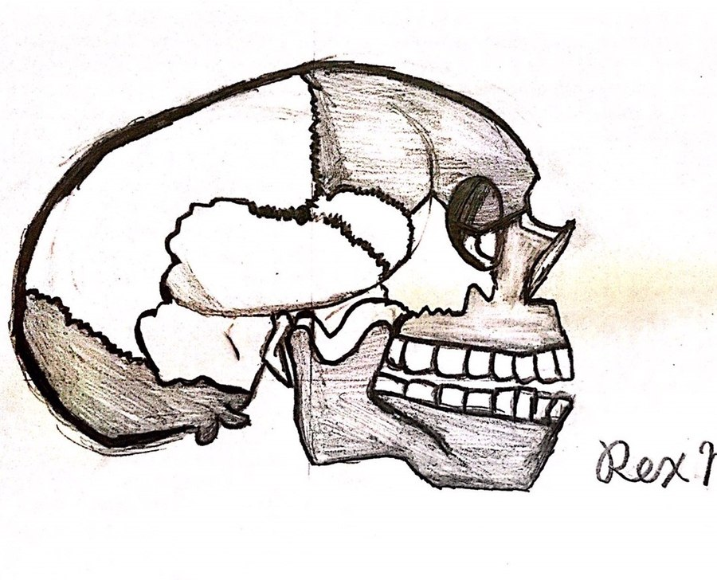

Rex Nursing
Rex Nursing關於本站
About This Site
👋 製作者👋 About the Creator
本站由 @Rex_Nursing 製作，具護理背景，致力於將臨床聽診知識整理成有文獻依據、易於查閱複習的中英雙語參考資料。
This site is created by @Rex_Nursing, who has a nursing background and is dedicated to organizing clinical auscultation knowledge into a well-referenced, easy-to-navigate bilingual resource.

✏️ 自己手繪的顱骨解剖側面圖，平時學習觀察骨骼構造的練習。
✏️ A hand-drawn skull anatomy sketch — part of personal study practice for observing skeletal structure.
📚 文獻來源📚 Literature Sources
教學內容整理自以下教科書之交叉比對，各頁面皆標明對應章節與頁碼：
Teaching content is synthesized from a cross-comparison of the following textbooks; each page cites the corresponding chapter and page numbers:
- Auscultation Skills: Breath & Heart Sounds, Jessica Shank Coviello, 5th ed., 2014, Lippincott Williams & Wilkins / Wolters Kluwer
- Bates' Guide to Physical Examination and History Taking, Lynn S. Bickley, 12th ed., 2017, Wolters Kluwer
- Murray & Nadel's Textbook of Respiratory Medicine, V. Courtney Broaddus, Joel D. Ernst, et al. (eds.), 7th ed., 2022, Elsevier
- 新生兒之急性呼吸窘迫指引、RDS臨床資料（用於「呻吟聲」條目）Acute Neonatal Respiratory Distress Guidelines and RDS clinical reference data (used for the Grunting entry)
若不同文獻之間的數據或說法有出入，教學頁面會並列標明各自出處，而非逕自選擇單一版本。
Where sources disagree on figures or terminology, the relevant page presents both versions with attribution rather than silently favoring one.
🔊 音檔來源與授權🔊 Audio Sources & Licensing
測驗與教學頁使用的9段聽診音檔，皆改作自下列公開創用CC姓名標示授權（CC BY）教學影片，依授權條款要求姓名標示如下：
The 9 auscultation clips used throughout the Learn and Quiz sections are adapted from the following openly licensed (Creative Commons Attribution / CC BY) educational videos, credited as required by the license:
-
Respiratory auscultation: physiological breath sounds & pathological breath sounds
Authors: María Dolores Mauricio, Eva Serna, Vannina González, Solanye Guerra, Antonio Alberola, María Àngels Cebrià, Francisco Martínez, Andrea Fortea, Jude Moreland
Servei de Formació Permanent i Innovació Educativa (SFPIE), Universitat de València · License: CC BY
來源：Source: youtube.com/watch?v=OeCrZ7dxyKk, youtube.com/watch?v=2U0aMQ1ypOg
用於：肺泡音、支氣管肺泡音、支氣管音、細爆裂音、粗爆裂音、喘鳴音、鼾音、肋膜摩擦音 Used for: vesicular, bronchovesicular, bronchial, fine crackles, coarse crackles, wheezes, rhonchi, pleural friction rub -
Stridor Lung Sounds Collection
Dr Amit Kumar Patel (YouTube) · License: CC BY
來源：Source: youtube.com/watch?v=1rXhQAM3jD8
用於：哮鳴音Used for: stridor
氣管音與呻吟聲無對應聽診音檔，教學頁以文字說明呈現，並註明原因。
No audio is available for tracheal sounds or grunting; their Learn pages are text-only with an explanatory note.